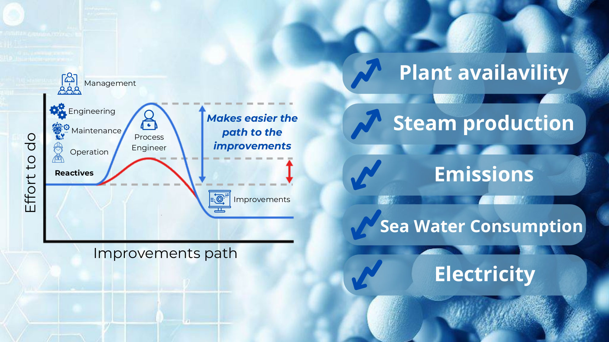

Atlantic Copper
Process Engineer
Sulphuric Acid Plants
May 2017 — Dec 2024
Developing improvements for three sulphuric acid production lines — bridging operations, engineering, and data science to maximise plant performance and minimise losses.
Graphic Summary

Experience Highlights
5+ models running in production: catalyst pressure-drop behaviour prediction (saved >20 production days); gas management optimisation (minimises electrical consumption, maximises steam output); gas cleaning capacity monitor; SO₂ emission early-warning; catalyst activity tracker.
Energy team lead for Sulphuric Acid Plant and Effluent Treatment Plant. Delivered 30% reduction in refrigeration water requirement and 10% cut in main blower consumption. Steam production increased. Projects proposed to recover a potential 200 GWh/year.
Project Manager for a €6M modification of refinery furnaces to reduce natural gas consumption during the anode copper final reduction process.
Gypsum plant is the downstream of sulphuric acid production. Capacity and availability problems threatened full facility shutdown. Applied Six Sigma methodology to find root cause. New operational point raised capacity from 58% to over 80%.
Six Sigma project to manage hydrogen peroxide addition and prevent secondary quality exceedances. Root cause identified; operational changes recommended. No quality problems reported in the two years since.
Strategic project to decrease facility-wide emissions. New catalyst distribution for SA Plant 2 (potential −20% emissions). Pipe modification in SA Plants 1 and 3 (−15% emissions per plant). Weekly joint follow-up with operations and maintenance for faster troubleshooting.
Demonstrated that standard minor-element characterisation did not apply to this plant, making the selected removal technology a poor fit. Findings saved approximately €2M in misallocated capex.
Led catalyst replacement activities across three full plant shutdowns, coordinating 30 workers per shutdown.
SA Plant 3 (2019) · SA Plant 1 Heat Recovery System (2020)
Responsible for bottleneck analysis to increase element removal without compromising plant integrity. Developed feed-mixture planning models to predict and control minor element behaviour in real time.
Multidisciplinary team meeting periodically to analyse the highest-risk areas, develop targeted solutions, and share learnings across the organisation.